14.5 主成分，主曲线和主曲面¶
!!! note “更新笔记” @2018-01-18 完成第一小节（不包含例子），并完成Ex. 14.7 @2018-01-19 完成主曲线（面）和谱聚类。
主成分已经在 3.4.1 节中讨论了，主成分阐释了岭回归的收缩机理。主成分是数据的一系列投影，互相不相关且按照方差大小排序。在下一节我们将要把主成分表示成逼近 \(N\) 个点 \(x_i\in \mathbb{R}^p\) 的 线性流形 (linear manifolds)。接着在 14.5.2 节讨论非线性的推广。最近提出的关于非线性逼近流形的方法将在 14.9 节讨论。
!!! note “weiya 注：流形学习” 参考@Jason Gu的知乎回答,
> 流形学习（manifold learning）是机器学习、模式识别中的一种方法，在维数约简方面具有广泛的应用。它的主要思想是将高维的数据映射到低维，使该低维的数据能够反映原高维数据的某些本质结构特征。流形学习的前提是有一种假设，即某些高维数据，实际是一种低维的流形结构嵌入在高维空间中。流形学习的目的是将其映射回低维空间中，揭示其本质。
主成分¶
\(\mathbb{R}^p\) 中数据的主成分给出了这些数据在秩 \(q\le p\) 下最好的线性逼近。
记观测值为 \(x_1,x_2,\ldots,x_N\)，然后考虑用秩为 \(q\) 的线性模型来表示它们
其中，\(\mu\) 是 \(\mathbb{R}^p \)中的位置向量，\(\mathbf V_q\) 是有 \(q\) 个正交单位列向量的 \(p\times q\) 的矩阵，\(\lambda\) 是一个 \(q\) 维的参数向量。这是一个秩为 \(q\) 的仿射超平面的系数表示。图 14.20 和图 14.21 分别展示了\(q=1\) 和 \(q=2\) 的情形。对数据进行最小二乘拟合这个模型等价最小化 重构误差 (reconstruction error)
我们可以对上式关于 \(\mu\) 和 \(\lambda_i\)（练习 14.7）求微分得到
!!! note “weiya注: Ex. 14.7” 式（ 14.51 ） 和 式（ 14.52 ） 的解并不是唯一的，\(\mu -\bar x\) 属于 \(\mathbf I-\V_q\V_q^T\) 的 Null Space，而注意到 \(\mathrm{rank}(\mathbf I-\V_q\V_q^T) = p-q >0\)（除非 \(q=p\)），所以解不唯一。 具体解题过程参见 Issue: Ex. 14.7
接下来需要去寻找正交矩阵 \(\mathbf V_q\):
为了方便，我们假设 \(\bar x=0\)（否则我们只需要简单地对数据进行中心化 \(\tilde x_i=x_i-\bar x\)）。\(p\times p\) 矩阵 \(\mathbf H_q=\mathbf V_q\mathbf V_q^T\) 是 投影矩阵 (projection matrix)，并且将每个点 \(x_i\) 投影到它的秩为 \(q\) 的重构 \(\mathbf H_qx_i\) 上，这是 \(x_i\) 在由 \(\mathbf V_q\) 的列张成的子空间上的正交投影。
!!! note “weiya 注：投影矩阵” 投影是从一个向量空间到其自身的线性变换，并且投影矩阵满足\(\mathbf P^2=\mathbf P\)。 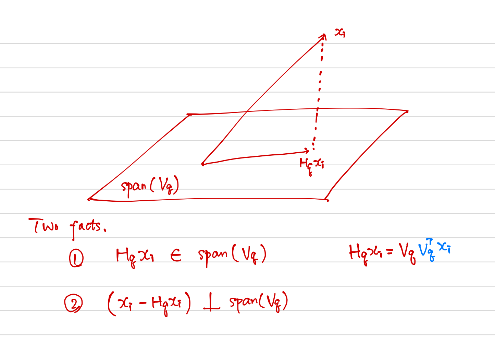 首先，根据\(\mathbf H_qx_i=\mathbf V_q\mathbf V^T_qx_i\)可以得出投影点是在\(\mathbf V_q\)的列所张成的子空间中；其次，对于该子空间中任一点 \(\mathbf V_qy\)，因为 $\( \begin{align*} (x_i-\mathbf H_qx_i)\cdot \mathbf V_qy_i&=(\mathbf I-\mathbf H_q)x_i\cdot \mathbf V_qy_i\\ &=x_i^T(\mathbf I-\mathbf H_q)^T\mathbf V_qy_i\\ &=x_i^T\mathbf O_{p\times q}y_i\\ &=0 \end{align*} \)$ 故为正交投影。
式（ 14.53 ） 的解可以按如下形式表示。将（中心化的）观测值放进 \(N\times p\) 的矩阵 \(\mathbf X\) 的行中。构造 \(\mathbf X\) 的奇异值分解：
这是数值分析中标准的分解，并且对该分解有很多的算法（比如，Golub and Van Loan, 19831）。这里 \(\mathbf U\) 是\(N\times p\) 的正交矩阵 (\(\mathbf{U^TU}=\mathbf I_p\))，它的列向量 \(\mathbf u_j\) 称为 左奇异向量 (left singular vectors)，\(\mathbf V\) 是\(p\times p\) 的正交矩阵 (\(\mathbf V^T\mathbf V=\mathbf I_p\))，其中的列向量 \(\mathbf v_j\) 称之为 右奇异向量 (right singular vectors)。对每个秩 \(q\)，式（ 14.53 ） 的解 \(\mathbf V_q\) 包含 \(\mathbf V\) 的前 \(q\) 列。\(\mathbf{UD}\) 的列称为 \(\mathbf X\) 的主成分（见 3.5.1 节）。式（ 14.52 ） 中 \(N\) 个最优的 \(\hat\lambda_i\) 由前 \(q\) 个主成分给出（\(N\times q\) 的矩阵 \(\mathbf U_q\mathbf D_q\) 的 \(N\) 个行向量）。
图 14.20 展示了 \(\mathbb{R}^2\) 中的一维主成分分析。
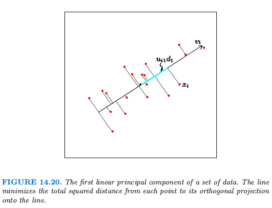
对于每个数据点 \(x_i\)，在直线上有个离它最近的点，由 \(u_{i1}d_1v_1\) 给出。这里 \(v_1\) 是该直线的方向，并且 \(\hat \lambda_i=u_{i1}d_1\) 衡量了沿着直线离原点的距离。类似地，图 14.21 展示了拟合 half-sphere 数据的二维主成分曲面（左图）。右图显示了数据在前两个主成分上的投影。这个投影是之前介绍的 SOM 方法的初始化的基础。这个过程在分离簇方面表现得非常成功。因为 half-sphere 是非线性的，非线性的投影会做得更好，这将是下一节的主题。
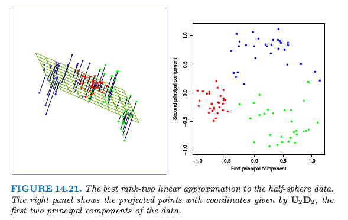
主成分还有许多其它的性质，举个例子，线性组合 \(\mathbf Xv_1\) 在特征的所有线性组合中有最大的方差；\(\mathbf Xv_2\) 在满足\(v_2\) 正交 \(v_1\) 的所有线性组合中有最大的方差，以此类推。
例子：手写数字¶
主成分是降低和压缩维度的有效工具。我们用第一章中描述的手写数字的例子来说明这个特点。图 14.22 显示了从 658 个 ‘3’ 中抽取的 130 个 ‘3’ 的样本，每一个都是 数字化的 (digitized) \(16\times 16\) 的灰度图象。我们看到书写风格、字体粗细以及字体方向上有显著差异。我们将这些图象看成是 \(\mathbb{R}^{256}\) 中的点 \(x_i\)，并且通过 SVD 式（ 14.54 ） 来计算它们的主成分。
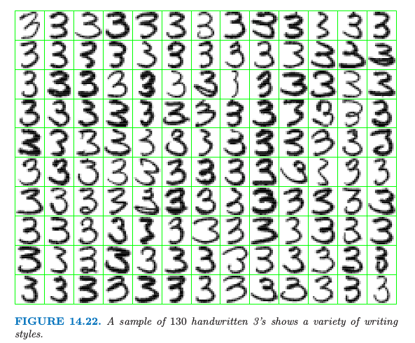
图 14.23 显示了这些数据的前两个主成分。
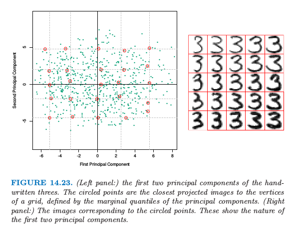
对于前两个主成分 \(u_{i1}d_1\) 和 \(u_{i2}d_2\)，我们计算 5%, 25%, 50%, 75%, 95% 分位数，并且用它们去定义叠加在图中的长方形网格。圆点表明靠近该网格顶点的图象，而距离主要用这些投影点的坐标来衡量，但也给正交子空间中的组分一些权重。右图显示了对应这些圆点的图象。这帮助我们观察前两个主成分的本质。我们看到 \(v_1\)（水平方向）主要与手写‘3’的下尾有关，而 \(v_2\)（垂直方向）与字体粗细有关。用 式（ 14.49 ） 的参数化模型表示，这两个组分的模型有如下形式
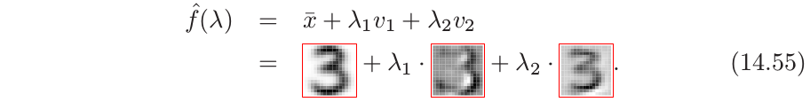
这里我们以图象形式展示了前两个主成分的方向，\(v_1\) 和 \(v_2\)。尽管有 256 个可能的主成分，但大约 50 个主成分解释了 90% 的方差，12 个主成分解释了 63% 的方差。
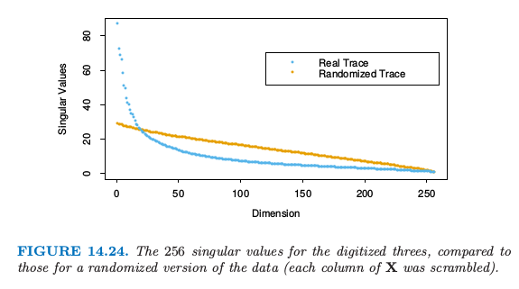
图 14.24 比较了奇异值和相等大小的不相关数据的奇异值，后者通过对 \(\mathbf X\) 的每一列进行随机扰动得到。
!!! note “weiya 注：奇异值” 在 SVD 分解中，\(\mathbf{D}\) 为 \(p\times p\) 的对角矩阵，对角元 \(d_1\ge d_2 \ge \cdots \ge d_p \ge 0\) 称作 \(\mathbf{X}\) 的奇异值。如果一个或多个 \(d_j=0\)，则 \(\mathbf{X}\) 为奇异的。
数字图象中的像素点本质上是相关的，而且因为所有这些图象都是同一个数字，因此相关性甚至更强。相对小的主成分子集可以看成表示高维数据的极佳低维特征。
例子：Procrustes 转换和形状平均¶
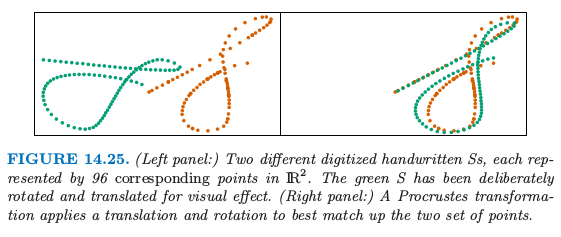
图 14.25 在同一张图中展示了两个集合的点，橘黄色和绿色。这个例子中，这些点表示手写’S’的两个数字化版本，这是从”Suresh”签名中提取的。图 14.26 展示了整个签名（第三和第四幅图）。这些签名是采用 touch-screen 设备（超市中很常见的设备）动态采集的。每个 \(S\) 用 \(N=96\) 个点来表示，记为 \(N\times 2\) 的矩阵 \(\mathbf X_1\) 和 \(\mathbf X_2\)。这些点之间存在对应关系，\(\mathbf X_1\) 和 \(\mathbf X_2\) 的第 \(i\) 行表示沿着两个’S’的同一位置。用 形态测量 (morphometrics) 的术语说就是这些点表示两个物体的 landmarks。怎样寻找这样一个 landmark 一般是很困难的，而且因情况而异。在这里，我们采用沿着每个签名的速度信号的 dynamic time warping (Hastie et al., 19922)，但是在这里不展开讨论。
!!! note “weiya 注：warping function” 听过的一个报告 Registration Problem in Functional Data Analysis，其中介绍到为了将曲线 \(w_i\) 匹配到参考曲线 \(w_j\)，我们需要一个 翘曲函数 (warping function) \(h_i(t)\) 使得 $\( w_i^\mathrm{st}ar(t) = w_i[h_i(t)] \)\( 以及 \)\( w_i^\mathrm{st}ar(t_{j,\text{landmark}}) \approx w_j(t_{j,\text{landmark}})\,. \)$
右图中，我们已经对绿色点已经采用了 平移 (translation) 和 旋转 (rotation) 的方式来尽可能与橘黄色点匹配——这称之为 Procrustes 变换（如，Mardia et al., 19793）。
!!! note “weiya 注：Procrustes 变换” 普罗库鲁斯提斯 (Procrustes) 是希腊神话中非洲的一个土匪，他经常用一个铁床来折磨别人，把抓来的人绑在铁床上，然后根据铁床的长度来裁剪他们的身体长度：那些身材短的人被拉长，那些身材长的人被砍掉多余的部分。
考虑下面的问题：
其中 \(\mathbf X_1\) 和 \(\mathbf X_2\) 都是对应点的 \(N\times p\) 矩阵，\(\mathbf R\) 是标准正交 \(p\times p\) 的矩阵，\(\mu\) 是 \(p\) 维的位置向量。
!!! note “原书注：\(\mathbf R\)” 为了简化问题，只考虑包含反射和旋转的正交矩阵（\(O(p)\)群）；尽管这里不可能有反射，这些方法可以进一步限制为只允许旋转（\(SO(p)\)群）。
这里 \(\Vert \mathbf X\Vert_F^2=\mathrm{trace}(\mathbf X^T\mathbf X)\) 是 Frobenius 矩阵范数的平方。
令 \(\bar x_1\) 和 \(\bar x_2\) 是矩阵的列均值向量，\(\tilde{\mathbf X}_1\) 和 \(\tilde{\mathbf X}_2\) 是这些矩阵减去均值得到的。考虑 SVD 分解 \(\tilde {\mathbf X}_1^T\tilde{\mathbf X}_2=\mathbf U\mathbf D\mathbf V^T\)。则 式（ 14.56 ） 的解由下式给出（练习 14.8）
!!! info “weiya 注：Ex. 14.8” 已解决，详见 Issue 46: Ex. 14.8.
并且这个最小距离被称为 Procrustes 距离。从该解的形式来看，我们可以将每个矩阵在其列中心点处进行中心化，接着完全忽略掉位置向量。下文假设是这种情形。
带尺度的 Procrustes 距离 (Procrustes distance with scaling) 解决了更一般的问题
其中 \(\beta>0\) 是正的标量值。\(\mathbf R\) 的解和前面一样，\(\hat\beta=\mathrm{trace}(D)/\Vert \mathbf X_1\Vert_F^2\).
与 Procrustes 距离有关的是 \(L\) 个形状的 Procrustes 平均，它解决了下面的问题
也就是，寻找到所有形状的平均 Procrustes 距离平方最近的形状 \(\mathbf M\)。这可以通过简单的算法实现：
初始化 \(\mathbf M=\mathbf X_1\)（举个例子）
固定 \(\mathbf M\)，求解 \(L\) 个 Procrustes 旋转问题，得到 \(\mathbf X_\ell'\leftarrow \mathbf X\hat{\mathbf R}_\ell\)
令 \(\mathbf M\leftarrow \frac 1L\sum\limits_{\ell=1}^L\mathbf X_\ell'\)
重复步骤 2 和 3 准则直至 式（ 14.59 ） 收敛。
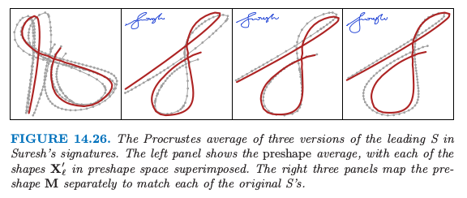
图 14.26 显示了三个形状的简单例子。注意到我们仅仅希望得到旋转的一个解；另外，我们加上约束，使得 \(\mathbf M\) 是上三角形式，来强制解是唯一的。我们可以很简单地把缩放合并到定义 式（ 14.59 ）；见练习 14.9。
!!! info “weiya 注：Ex. 14.9” 已解决，详见 Issue 47: Ex. 14.9.
更一般地，我们可以通过下式来定义一系列形状的 affine-invariant 平均：
其中 \(\mathbf A_\ell\) 是任意 \(p\times p\) 的非奇异矩阵。这里我们要求标准化，使得 \(\mathbf M^T\mathbf M=\mathbf I\)，来避免平凡解。这个解是吸引人的，并且可以不用迭代便可以计算（练习 14.10）：
令 \(\mathbf H_\ell=\mathbf X_\ell(\mathbf X_\ell^T\mathbf X_\ell)^{-1}\mathbf X_\ell^T\) 为由 \(\mathbf X_\ell\) 定义的秩为 \(p\) 的投影矩阵
\(\mathbf M\) 是 \(N\times p\) 的矩阵，其由 \(\bar{\mathbf H}=\frac{1}{L}\sum\limits_{\ell=1}^L\mathbf H_\ell\) 的最大 \(p\) 个特征向量所构成
!!! info “weiya 注：Ex. 14.10” 已解决，详见 Issue 48: Ex. 14.10.
主曲线和主曲面¶
主曲线推广了主成分直线，用一维光滑曲线来近似 \(\mathbb{R}^p\) 中的数据点。主曲面更一般化，它给出了二维或更高维的流形近似。
我们首先定义随机变量 \(X\in \mathbb{R}^p\) 的主曲线，然后讨论有限数据的情形。令 \(f(\lambda)\) 为 \(\mathbb{R}^p\) 中参数化的光滑曲线。因此 \(f(\lambda)\) 是有着 \(p\) 个坐标的向量函数，每个都是关于单参数 \(\lambda\) 的光滑函数。举个例子，可以选择参数 \(\lambda\) 为沿着曲线到固定原点的弧长。对于每个数据点 \(x\)，令 \(\lambda_f(x)\) 为曲线上离 \(x\) 最近的点。如果满足
则 \(f(\lambda)\) 称为随机向量 \(X\) 的分布的主曲线。这也就是说 \(f(\lambda)\) 是投影到曲线上的所有数据点的平均，这些点也称为有“责任”的点。这也称作 self-consistency 性质。尽管在实际中，多元连续随机变量的分布有无穷多个主曲线(Duchamp and Stuetzle, 19964)，但是我们主要对光滑的主曲线感兴趣。图 14.27 展示了一个主曲线。
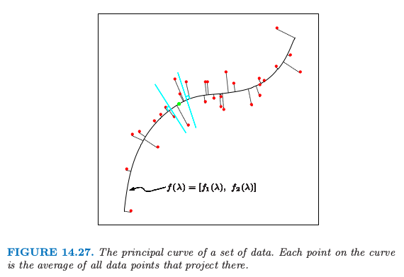
!!! note “weiya 注：” 主成分可以看成是主曲线的特殊情形。 首先，式（ 14.49 ） 可以写成 $\( f(\lambda) = [\mu + \V_{q1}\lambda, \mu + \V_{q2}\lambda, \ldots, \mu + \V_{qp}\lambda]\,, \)\( 其中 \)\V_{qi}\( 是 \)\V_q\( 的第 \)i$ 个行向量. 其次，对比图 14.20 和图 14.27，
主点 (Principal points) 是与之相关的一个有趣的概念。考虑含 \(k\) 个原型的集合，对于在分布的支撑集中的每个点 \(x\)，选出最近的原型，也就是，为之负责的那个原型。这导出了对特征空间的划分，得到 Voronoi 区域。这 \(k\) 个点最小化了 \(X\) 到其原型的期望距离，它们称为该分布的主点。每个主点是 self-consistent，因为它等于其 Voronoi 区域的 \(X\) 的均值。举个例子，当 \(k=1\)，一个 圆形正态分布 的主点是均值向量；当 \(k=2\) 时，成对的点对称排列在通过均值向量的射线上。主点类似 \(K\)-means 聚类中的重心的分布。主曲线可以看成是 \(k=\infty\) 时的主点，但是限制为光滑曲线，用类似的方式，SOM 限制 K-means 聚类中心的落在一个光滑流形上。
!!! question “weiya 注：” Issue 197: Self-consistency of pricipal points? Reasons for k = 1, 2, 3?
为了寻找某分布的主曲线 \(f(\lambda)\)，我们考虑坐标函数 \(f(\lambda)=[f_1(\lambda),f_2(\lambda),\ldots, f_p(\lambda)]\)，并且令\(X^T=(X_1, X_2,\ldots, X_p)\)。考虑下面的轮换过程：
第一个等式固定 \(\lambda\)，并且加上 self-consistentcy 的要求 式（ 14.61 ）。第二个等式固定曲线，并在曲线上寻找距离每个点最近的点。在有限的数据情形下，主曲线算法以线性主成分开始，迭代 式（ 14.62 ） 中的两步直至收敛。散点图光滑器用于估计步骤 (a) 中的条件期望，这通过将每个 \(X_j\) 看成关于弧长 \(\hat \lambda(X)\) 的函数来光滑，而且 (b) 中的投影对于每个观测数据点来实现。证明一般情况下的收敛是很困难的，但是可以证明如果散点图光滑中采用线性最小二乘拟合，则该过程将会收敛至第一线性主成分，这等价寻找矩阵最大特征值的幂法。
主曲面与主曲线有着完全相同的形式，不过是在更高维度下的。使用最普遍的是二维主曲面，其坐标函数为
上述步骤(a)中的估计通过二维曲面光滑器得到。维数大于2的主曲面很少用到，因为在高维光滑的可视化不是很吸引人。
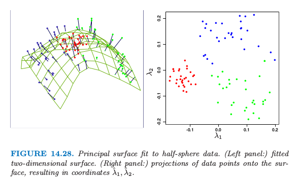
图 14.28 展示了对 half-sphere 数据进行主曲面光滑的结果。图中将数据点看成是估计的非线性坐标 \(\hat \lambda_1(x_i), \hat \lambda_2(x_i)\) 的函数。图中的类别划分是很显然的。
!!! note “weiya 注：Recall” $\( m_j=\frac{\sum w_kx_k}{\sum w_k}\tag{14.48} \)$
主曲面非常类似 自组织图 (self-organizing maps)。如果我们采用核曲面光滑器来估计坐标函数 \(f_j(\lambda_1,\lambda_2)\)，这与 SOMs 的 batch 版本 式（ 14.48 ） 有着相同的形式。SOM 的权重 \(w_k\) 恰恰是核的权重。然而，有一个区别，主曲面估计对每个数据点 \(x_i\) 估计单独的原型 \(f(\lambda_1(x_i),\lambda_2(x_i))\)，而 SOM 会在所有数据中间共享一小部分的原型点。结果是，SOM 与主曲面仅仅当 SOM 原型的个数非常大时两者才一致。
两者之间还有一个概念上的区别。主曲面给出了关于坐标函数的整个流形的光滑参量化，而 SOMs 是离散的并且仅仅产生近似数据的那些估计的原型。主曲面的光滑参量化保持局部的距离：在图 14.28 中，红色聚类点比绿色或蓝色聚类点更紧凑。
!!! note “weiya 注：Recall” 对于 SOM, 因为没有使用二维的距离，没有迹象能表明 SOM 投射中关于红色簇比其它的簇更紧。
在简单的例子中，估计的坐标函数本身是可以知道的：见练习 14.13。
!!! info “weiya 注：Ex. 14.13” 已解决，详见 Issue 49: Ex. 14.13.
## 谱聚类
像 K-means 这样传统的聚类方法采用 spherical 或者 elliptical 度量来对数据点进行划分。因此当簇是非凸的时候效果并不好，比如图 14.29 中左上角的同心圆。
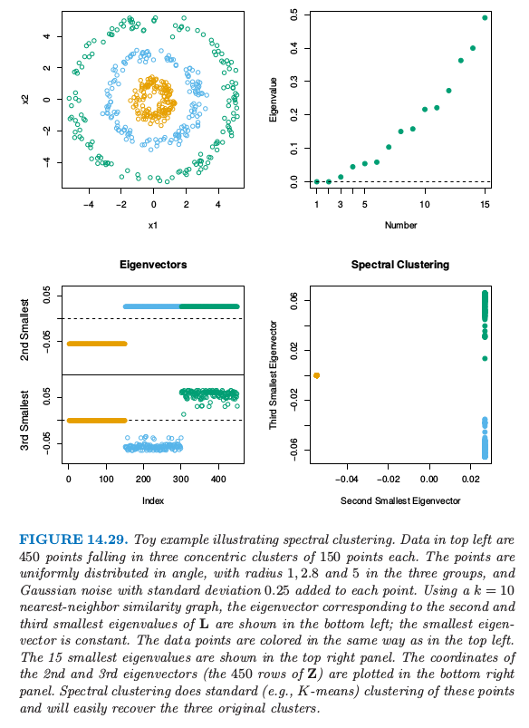
谱聚类是标准聚类方法的推广，而且也是为这些情形所设计的。它与局部多维缩放技巧有着紧密的联系（14.9 节）。
出发点是所有观测点对间的成对相似性 \(s_{ii'}\ge 0\) 构成的 \(N\times N\) 矩阵。我们将这些观测用无向相似性图 \(G=\langle V, E \rangle\) 来表示。\(N\) 个顶点 \(v_i\) 表示观测值，如果成对顶点的相似性为正值（或者超出某个阈值），则它们之间用一条边相连。边的权重为 \(s_{ii'}\)。我们希望对这个图进行划分，使得不同类之间的边有较低的权重，而在类间有着较高的权重。在谱聚类中，思想是构造相似性图来表示观测点间的局部邻居关系。
更精确地，考虑 \(N\) 个点 \(x_i\in \mathbb{R}^p\)，令 \(d_{ii'}\) 为 \(x_i\) 和 \(x_{i'}\) 间的欧几里得距离。我们将 radical-kernel gram 矩阵作为我们的相似性矩阵；也就是 \(s_{ii'}=\exp(-d_{ii'}^2/c)\)，其中 \(c > 0\) 是缩放参数。
有许多方式来定义相似性矩阵及其反映局部行为的相似性图。最流行的方式是 mutual K-nearest-neighbor graph。定义 \({\mathcal{N}}\_K\) 为邻居点的对称子集；特别地，如果点 \(i\) 在 \(i'\) 的 \(K\)-最近邻中，则点对 \((i,i')\) 在 \({\mathcal{N}}\_K\) 中，反之亦然。接着我们连接所有的对称最近邻，然后给出边的权重 \(w_{ii'}=s_{ii'}\)；否则边的权重为 \(0\)。等价地，我们对不属于 \(\mathcal{N}_K\) 的点的成对相关性赋为 \(0\)，然后画出这个修改版本的矩阵的图。
另外，全连接图包含所有的成对边，权重为 \(w_{ii'}=s_{ii'}\)，局部行为通过缩放参数 \(c\) 来控制。
从相似图得到的边的矩阵 \(\mathbf W=\\{w_{ii'}\\}\) 称为 邻接矩阵 (adjacency matrix)。结点 \(i\) 的 度(degree) 为 \(g_i=\sum_iw_{ii'}\)，这是与该点相连的权重之和。令 \(\mathbf G\) 表示对角元为 \(g_i\) 的对角矩阵。
最后，graph laplacian 定义为
这称为未标准化的 graph lapacian，人们提出一系列标准化的版本——对 laplacian 关于结点的度进行标准化，举个例子，\(\tilde{\mathbf L}=\mathbf I-\mathbf G^{-1}\mathbf W\)。
谱聚类寻找 \(\mathbf L\) 最小的 \(m\) 个特征值对应的 \(m\) 个特征向量 \(\mathbf Z_{N\times m}\)（忽略平凡的常值特征向量）。采用如 K-means 的标准方法，我们可以对 \(\mathbf Z\) 的行聚类得到原始数据点的聚类。
图 14.29 展示了一个例子。左上图显示了 3 个圆形类别中的 450 个模拟数据点。K-means 聚类很明显对于簇外的点不容易进行分类。我们采用 10 最近邻相似图的谱聚类，并且左下图展示了对应 graph laplacian 的第二和第三最小特征值的特征向量。这两个特征向量找出了是哪个簇，并且特征向量矩阵 \(\mathbf Y\) 的行的散点图清晰地将簇分隔开。对变换后的点应用 K-means 聚类的过程同样能得到三个类。
为什么谱聚类有效？对于任意向量 \(\mathbf f\)，我们有
公式 式（ 14.64 ） 表明如果有较大邻接 \(w_{ii'}\) 的数据对的坐标 \(f_i\) 和 \(f_{i'}\) 很接近，则 \(\mathbf f^T\mathbf L\mathbf f\) 将达到较小的值。
因为对于任意的图 \(\boldsymbol 1^T\mathbf L\boldsymbol 1=0\)，常值向量是特征值为 0 的平凡解。如果图是连接的，这是唯一的 0 特征向量，这个结论并不是很显然（练习 14.21）。推广这个结论，可以很简单地证明对于有 \(m\) 个连接组分的图，能重新排列结点使得 \(\mathbf L\) 是成块对角的，其中每个块是连接的组分。于是 \(\mathbf L\) 有 \(m\) 个特征值为 0 的特征向量，并且特征值为 0 的特征空间由连接组分的指示向量张成。实际上，连接有强有弱，则零特征值也可以用较小的特征值代替。
!!! info “weiya 注：Ex. 14.21” 已解决，详见 Issue 183: Ex. 14.21.
谱聚类是寻找非凸簇的一种很有趣的方法。当采用标准化后的 graph laplacian 定义，有另外一种方式来看这种方法。定义 \(\mathbf P=\mathbf G^{-1}\mathbf W\)，我们考虑在图上以转移概率矩阵 \(\mathbf P\) 进行随机游走。则谱聚类得到随机游走中类与类之间不发生转移的点集。
在实际中应用谱聚类时必须要处理一系列的问题。我们必须选择相似图的类型——比如，全连接或者最近邻，以及相关的参数比如最近邻的个数 \(k\) 或者核的缩放参数 \(c\)。我们也必须选择从 \(\mathbf L\) 中提取的特征向量的个数，以及最后和所有聚类方法一样，选择簇的个数。在图 14.29 这一简单例子中，我们得到 \(k\in [5, 200]\) 中良好的结果，值为 200 的对应全连接图。当 \(k < 5\)，结果变坏。观测图 14.29 的右上图，我们看到最小的三个特征值与剩余部分没有强烈的分离。因此选择多少个特征向量并不清楚。
核主成分¶
谱聚类与 核主成分 (kernel principal components) 有关联，这是线性主成分的非线性版本。标准的线性主成分 (PCA) 可以通过协方差矩阵的特征向量得到，并且给出了数据有最大方差的方向。核主成分 (KPCA) 扩充了 PCA 的范围，模仿扩充特征时采用的非线性变换方法，然后在变换后的特征空间中应用 PCA。
在 18.5.2 节，我们展示了数据矩阵 \(X\) 的主成分变量 \(Z\) 可以通过内积矩阵 (gram 矩阵) \(K=XX^T\) 得到。具体地，对双重中心化的 gram 矩阵进行特征分解
其中 \(\M=11^T/N\), 然后我们有 \(Z=\U\D\)。练习 18.15 展示了怎么计算这个空间中新观测的投影。
!!! info “weiya 注：Ex. 18.15” 已解决，详见 Issue 184: Ex. 18.15.
核主成分简单地模仿了这个过程，将核矩阵 \(K=\\{K(x_i,x_{i'})\\}\) 看成隐含特征 \(\langle \phi(x_i),\phi(x_i')\rangle\) 的内积矩阵，然后寻找其特征向量。第 \(m\) 个组分 \(\z_m\)（\(Z\) 的第 \(m\) 列）的元素（在忽略中心化的情况下）可以写成 \(z_{im}=\sum_{j=1}^N\alpha_{jm}K(x_i,x_j)\)，其中 \(\alpha_{jm} = u_{jm}/d_m\)（练习 14.16）。
!!! info “weiya 注：Ex. 14.16” 已解决，详见 Issue 185: Ex. 14.16。
将 \(\z_m\) 看成主成分函数 \(g_m\in\cH_K\) 在样本处的取值，其中 \(\cH_K\) 是由 \(K\) 生成的再生核希尔伯特空间（5.8.1 节），这可以帮助我们进一步理解核主成分。第一主成分函数 \(g_1\) 求解了
这里 \(\mathrm{Var}_\cT\) 表示在训练数据 \(\cT\) 上的样本方差。范数约束 \(\Vert g_1\Vert_{\cH_K}=1\) 控制了函数 \(g_1\) 的大小及光滑度，这由核 \(K\) 控制。在回归情形中，可以证明 式（ 14.66 ） 的解是有限维的，并且可以表示为 \(g_1(x)=\sum_{j=1}^Nc_jK(x,x_j)\). 练习 14.17 证明了这个解为 \(\hat c_j=\alpha_{j1},j=1,\ldots,N\). 第二主成分函数也是类似定义的，但多了额外的限制 \(\langle g_1,g_2\rangle_{\cH_K}=0\)，以此类推。
!!! note “weiya 注：Ex. 14.17” 已解决，详见 Issue 202: Ex. 14.17。
Schölkopf et al. (1999)5 演示了核主成分作为手写数字分类中的特征的应用，并且说明了相对于线性主成分，分类器的表现有改善。
注意到如果我们采用径向核
则核矩阵 \(K\) 与谱聚类中的相似度矩阵 \(\S\) 有着相同的形式。边的权重矩阵 \(W\) 是 \(K\) 的局部化版本，将不是最近邻的成对点的相似度设为 0。
核主成分寻找 \(\tilde K\) 最大特征值对应的特征向量；这等价于寻找
的最小特征值对应的特征向量。这几乎与 Laplacian 式（ 14.63 ） 一样，区别在于 \(\tilde K\) 的中心化和 \(\G\) 对角元有结点的度。
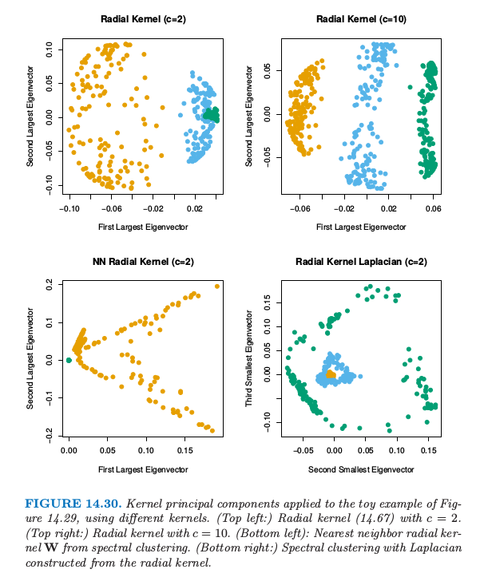
图 14.30 检验了在图 14.29 的小例子中，核主成分的表现效果。左上角我们使用 \(c=2\) 的径向核，跟谱聚类中使用的值一样。这并没有将类别分开，但是当 \(c=10\)（右上图），第一主成分能很好地将类别分开。在左下图采用谱聚类中的最近邻径向核 \(W\) 来应用核 PCA。在右下角我们用核矩阵作为谱聚类中构造 式（ 14.63 ） 的相似度矩阵。这两种情形都不能很好地把两个类别分开。调节 \(c\) 也没有帮助。
在这个小例子中，我们看到核主成分对于核的尺度以及本性很敏感。我们也看到核的最近邻截断对于谱聚类能否成功很重要。
!!! note “weiya 注：” 粗略地说，谱聚类要求最近邻截断，而核主成分要求中心化的核矩阵。
稀疏主成分¶
我们经常通过查看方向向量 \(v_j\)，或者称 载荷 (loadings)，来判断哪个变量在起作用，进而对主成分进行解释。我们在 \((14.55)\) 中对图象载荷采用了这种方法。如果载荷是稀疏的，这种解释通常会很简单。这一节我们简要讨论能导出具有稀疏载荷的主成分方法。它们都是基于 lasso (\(L_1\)) 惩罚。
首先以 \(N\times p\) 的数据矩阵 \(X\) 开始，其中列进行了中心化。这些方法要么关注主成分的最大方差性质，要么最小重构误差。Joliffe et al. (2003)6 的 SCoTLASS procedure 采用第一种方法，求解
绝对值约束促使某些载荷为 0，因此 \(v\) 是稀疏的。进一步，通过限制第 \(k\) 个主成分与前 \(k-1\) 个主成分正交来寻找稀疏的主成分。不幸的是，这个问题是非凸的，并且计算很困难。
Zou et al. (2006)7 而是以主成分的回归/重构性质开始，类似 14.5.1 的方法。令 \(x_i\) 为 \(X\) 的第 \(i\) 行。对于单个主成分，他们的稀疏主成分技巧解决了
下面更具体地观察它的组成。
如果 \(\lambda\) 和 \(\lambda_1\) 都是 0，并且 \(N>p\)，易证 \(v=\theta\)，并且这是最大主成分方向。
当 \(p>>N\)，解不一定是唯一的，除了 \(\lambda > 0\)。对于任何 \(\lambda > 0\) 以及 \(\lambda_1=0\)，\(v\) 的解与最大主成分方向成比例。
\(v\) 的第二个惩罚鼓励载荷的稀疏性。
对于多重组分，稀疏主成分过程最小化
约束为 \(\bTheta^T\bTheta=\I_K\)。这里 \(\V\) 是 \(p\times K\) 的矩阵，其列向量为 \(v_k\)，\(\bTheta\) 也是 \(p\times K\).
准则 式（ 14.71 ） 关于 \(\V\) 和 \(\bTheta\) 不是联合凸的，但是当固定一个参数，这关于另一参数是凸的。固定 \(\bTheta\) 然后对 \(\V\) 最小化等价于 \(K\) 个 elastic net 问题（18.4 节），并且可以有效地解决。另一方面，固定 \(\V\) 然后对 \(\Theta\) 最小化是 Procrustes 问题 式（ 14.56 ） 的一个版本，并且可以通过简单的 SVD 进行求解（练习 14.12）。这些步骤交替进行直至收敛。
!!! info “weiya 注：Ex. 14.12” 已解决，详见 Issue 186: Ex. 14.12。
图 14.31 展示了采用 式（ 14.71 ） 进行系数主成分分析的例子，取自 Sjöstrand et al. (2007)8。在一项涉及 569 名老人的研究中，胼胝体 (corpus callosum， CC) 的 矢状面横截面 (mid-sagittal cross-section) 的形状与不同的临床参数有关。这个例子中，对形状数据应用 PCA，这在形态学中是很流行的工具。对于这样的应用，沿着形状的外围，识别出一系列的标记 (landmarks)，图 14.32 展示了一个例子。
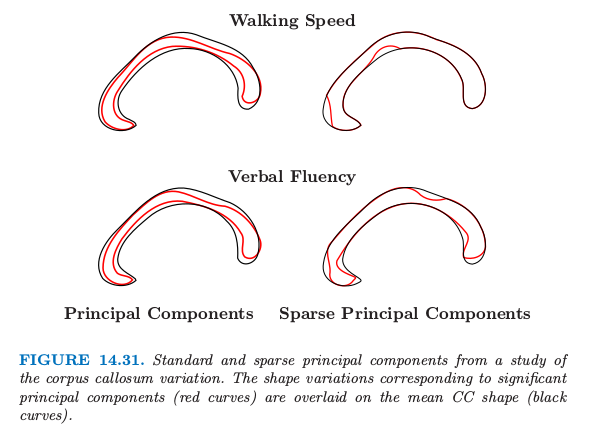
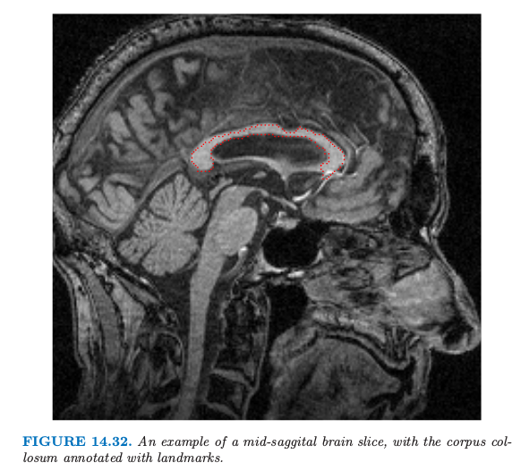
它们是通过允许旋转的 Procrustes 分析后继续对齐得到的，这里 Procrustes 还允许放缩。PCA 使用的特征是每个标记 (landmarks) 的坐标对的序列，放到单个向量中。
在这个分析中，标准主成分和稀疏主成分都进行了计算，并且识别出了显著与不同临床参数有关的组分。这张图像中，对应显著主成分（红色曲线）的形状变体画在了均值 CC 的上面。与 CC 有关的慢速步行在连接行动控制和大脑的感知中心的区域中更细（表现出萎缩症）。与 CC 有关的低语言流利度在连接听觉、视觉、认知中心的区域中更细。稀疏主成分过程对这一重要差异提供了一个更简洁，并且可能更有信息量的描绘。
- 1
Golub, G. and Van Loan, C. (1983). Matrix Computations, Johns Hopkins University Press, Baltimore.
- 2
Hastie, T., Kishon, E., Clark, M. and Fan, J. (1992). A model for signature verification, Technical report, AT&T Bell Laboratories. http://www-stat.stanford.edu/~hastie/Papers/signature.pdf .
- 3
Mardia, K., Kent, J. and Bibby, J. (1979). Multivariate Analysis, Academic Press.
- 4
Duchamp, T. and Stuetzle, W. (1996). Extremal properties of principal curves in the plane, Annals of Statistics 24: 1511–1520.
- 5
Schölkopf, B., Smola, A. and M¨uller, K.-R. (1999). Kernel principal component analysis, in B. Sch¨olkopf, C. Burges and A. Smola (eds), Advances in Kernel Methods—Support Vector Learning, MIT Press, Cambridge, MA, USA, pp. 327–352.
- 6
Joliffe, I. T., Trendafilov, N. T. and Uddin, M. (2003). A modified principal component technique based on the lasso, Journal of Computational and Graphical Statistics 12: 531–547.
- 7
Zou, H., Hastie, T. and Tibshirani, R. (2006). Sparse principal component analysis, Journal of Computational and Graphical Statistics 15(2): 265–28.
- 8
Sjöstrand, K., Rostrup, E., Ryberg, C., Larsen, R., Studholme, C., Baezner, H., Ferro, J., Fazekas, F., Pantoni, L., Inzitari, D. and Waldemar, G. (2007). Sparse decomposition and modeling of anatomical shape variation, IEEE Transactions on Medical Imaging 26(12): 1625–1635.